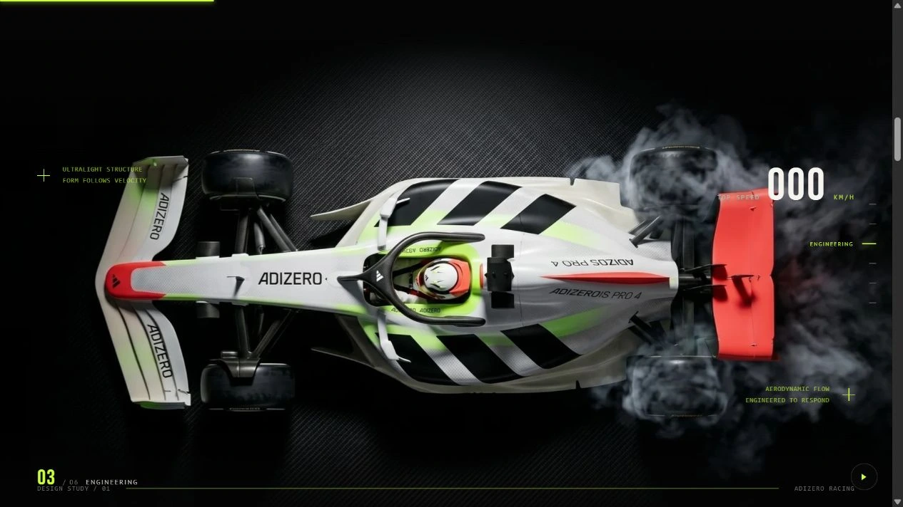
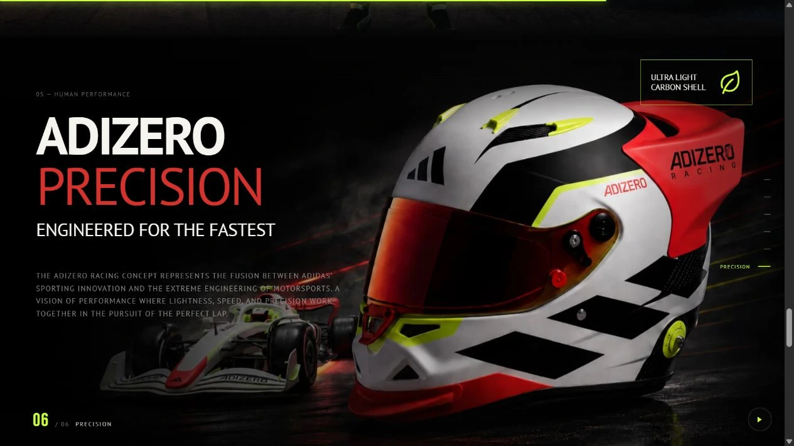
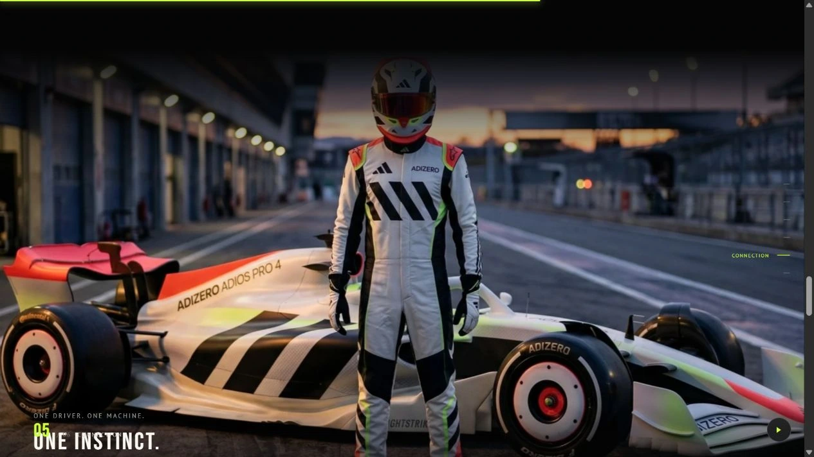
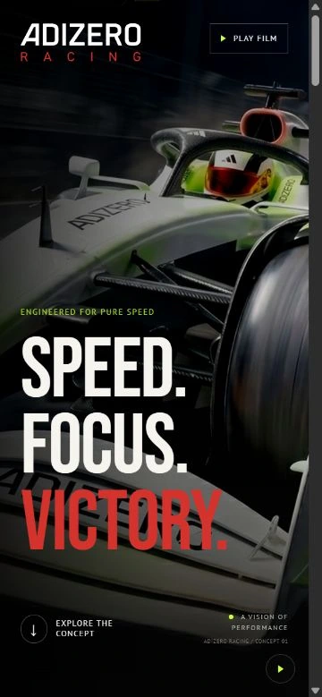
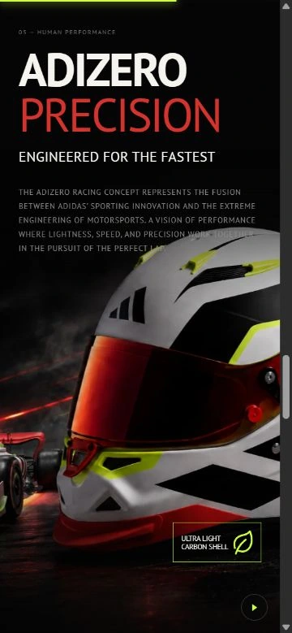
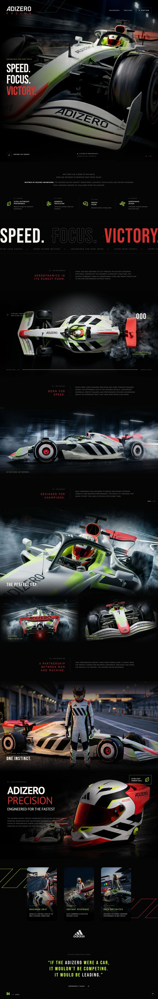
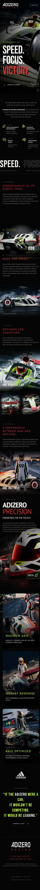

A velocidade como
linguagem de design.
Um website conceitual que aproxima o universo de performance Adizero do automobilismo. A versão publicada combina imagens em grande escala, tipografia condensada, navegação por capítulos e movimento em uma experiência responsiva.
Visitar site publicado
Imagem, tipografia e contraste apresentam o conceito.
Uma ideia.
Uma experiência para percorrer.
O projeto transforma a aproximação entre o universo Adizero e o automobilismo em uma narrativa visual. A apresentação começa com uma cena do carro em pista e avança por capítulos dedicados ao conceito, à engenharia, à velocidade, à conexão e à precisão.
Planos abertos, vistas superiores e enquadramentos próximos alternam o foco entre o carro, o piloto e os detalhes. A sequência constrói o ritmo da experiência ao longo da rolagem.

A vista superior coloca a composição do carro em evidência.

Uma nova escala para apresentar os detalhes do conceito.
Contraste que
acelera o olhar.
O fundo preto dá profundidade às cenas. Vermelho e verde-lima pontuam títulos, controles e detalhes gráficos. A tipografia combina Bebas Neue e PT Sans, com caixa alta e diferenças de escala para conduzir a leitura.
O movimento acompanha a apresentação, enquanto a navegação por capítulos permite saltar entre as seções no desktop. O controle de pausa oferece uma opção para observar a composição sem animações.

A narrativa aproxima o carro de quem o conduz.
O mesmo conceito.
Outro enquadramento.
Nas telas menores, os títulos, textos e imagens se reorganizam em uma coluna. A abertura mantém o protagonismo do carro e da tipografia, enquanto os capítulos adaptam o enquadramento das cenas à largura disponível.
As capturas abaixo mostram a abertura e o capítulo de precisão na versão mobile publicada. A página completa pode ser percorrida nas duas visualizações ao final do case.

A chamada principal acompanha o formato vertical.

Texto e imagem se adaptam à leitura em uma coluna.
Explore a
versão publicada.

Captura do site publicado em desktop. Role dentro da imagem para percorrer a página ou clique para ampliar.

Captura do site publicado em mobile. Role dentro da imagem para acompanhar todos os capítulos.
Projeto conceitual independente. As marcas citadas pertencem aos seus respectivos titulares.